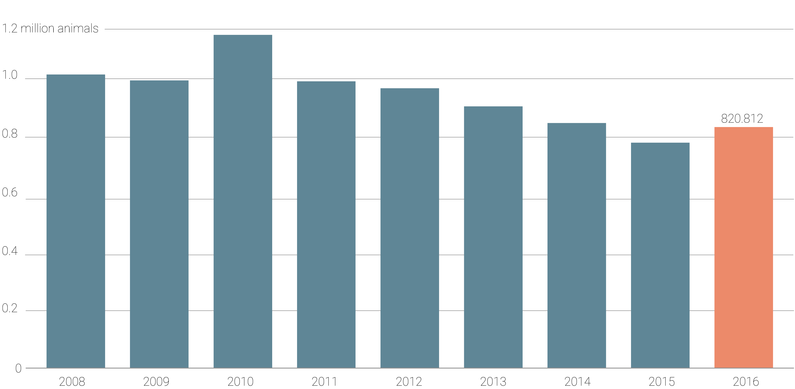
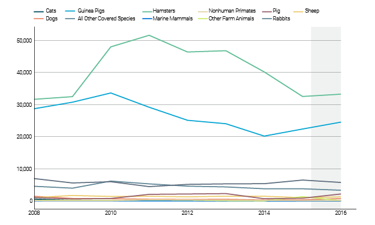

Animals in Research
The Number of Animals Used in Research Increased in 2016
BY Thanasis Trompoukis
Published July 30, 2018
In 2016 there was a 7% increase in use of animals in research labs across the United States. The data from the Department of Agriculture put the number of laboratory animals used in research at 820,812.
Use of Animals in Research
After 2010 the number of animals who were used in ressearch labs across the US was in decline. In 2016 the number increased by more than 50.000, from 767.622 to 820.812 animals.
NOTE: These numbers do not include rats, mice, birds or fish, as these animals are not covered by the Animal Welfare Act.
Most Commonly Used Animals
Guinea pigs, rabbits, hamsters and non human primates are the most commonly used research lab animals. The use of non-rodent animals has been declining over the past decades. This includes a fall in the number of dogs used in research. In 1979 there were over 200,000 dogs used in research. By 2016 the number has dropped to 60,979 dogs.
Number of Animals in Research from 2008 to 2016
The "Other Species" includes other warm-blooded animals covered by the Regulations as well as wild or exotic species.

In a New York Times story about the use of dogs in research, scientists say that "... there are good reasons dogs are studied so intensively. There are many more dog breeds — about 400 compared to about 40 cat breeds. That means more genetic diversity, and better tools for studying genomes".
Use of Cats and Dogs in 2016 per State
Animals in Pain
According to the NGO Releace Chimps "The overarching problem with the AWA is that it has no authority over what is done or not done for animals in actual experiments. There are NO laws preventing researchers from breaking bones, withholding painkillers, forcing ingestion of poisonous substances, burning, leaving animals in complete isolation for months—or other atrocities that in the real world constitute blatant and egregious animal cruelties. The crucial decision of what is acceptable or unacceptable to be done to a living animal is left to each facility’s Institutional Animal Care and Use Committee (IACUC) members. The crucial decision of what is acceptable or unacceptable to be done to a living animal is left to each facility’s Institutional Animal Care and Use Committee (IACUC) members".
With Pain Without Drugs
Number of animals who have been used in procedures which include pain, without having taken any drugs to reduce the pain.
NOTE: an optional note or source can go here.
SOURCE: Sourcename here
Animal Use in Research per State
New Jersey and California use the most animals in the United States.